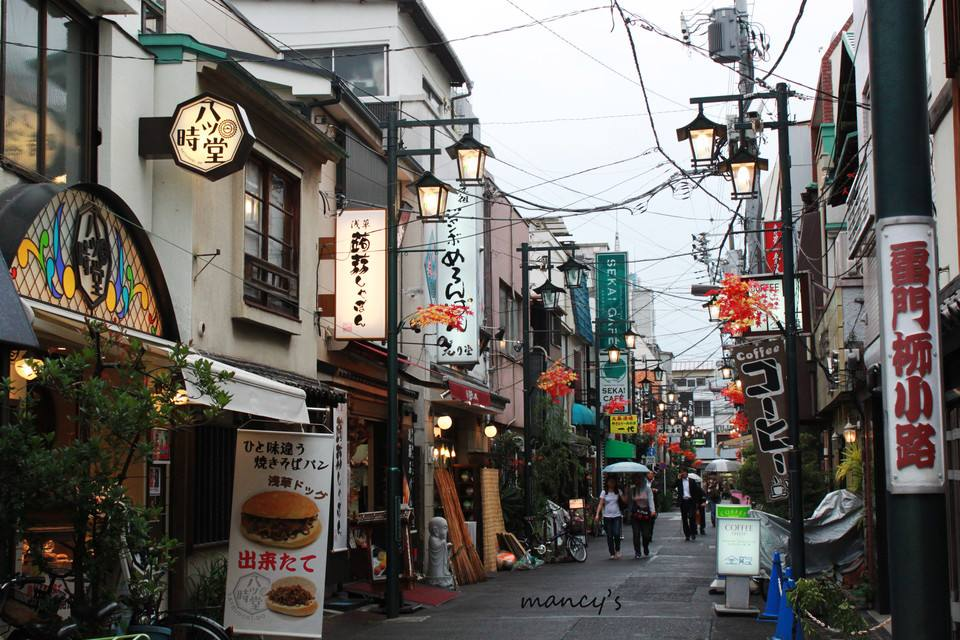
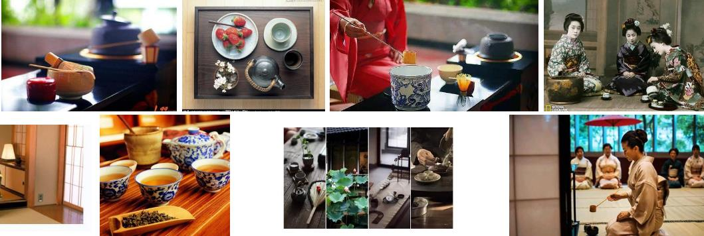

还在为着自己的重复生活而感到生活失去了意义吗？进入日复一日的重复的生活，其实已经失去了生活的意义了、
不必太在意，平凡之中才可以品味到生活的美妙味道，经历多了，才可以感觉到生活的平平淡淡的真谛
跟着我一起去激情吧，去游遍的美丽的日本九州，神户，四国，及其日本的素质信仰吧，
城市的夜色真的很美的哦。让我们去领路不同的城市风味！！
日本的街道也是蛮不错哦；很温馨 
那么 我们, 有理由要相信 and 这里的景色真的美不盛收 Love the World!;!!How perfect
这里的 猫猫君也是相当的神奇的。。
要知道更多的吗？

日本茶道是日本文化的结晶，是日本文化的代表，这一标志性的地位在日本文化中越来越凸显。
你可以使用任何的一种方向键或者空格键去操纵页面